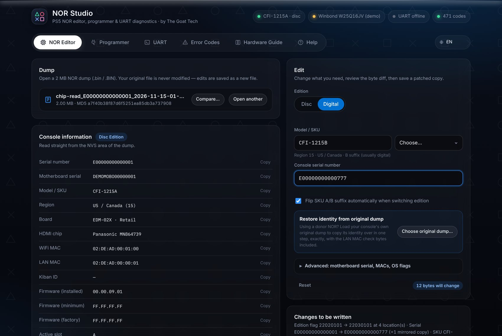
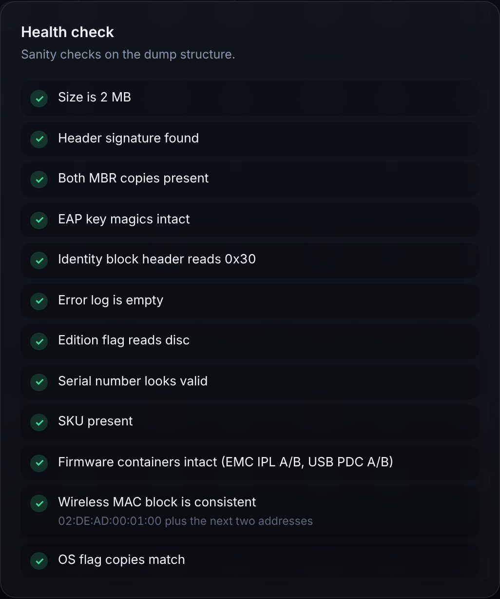
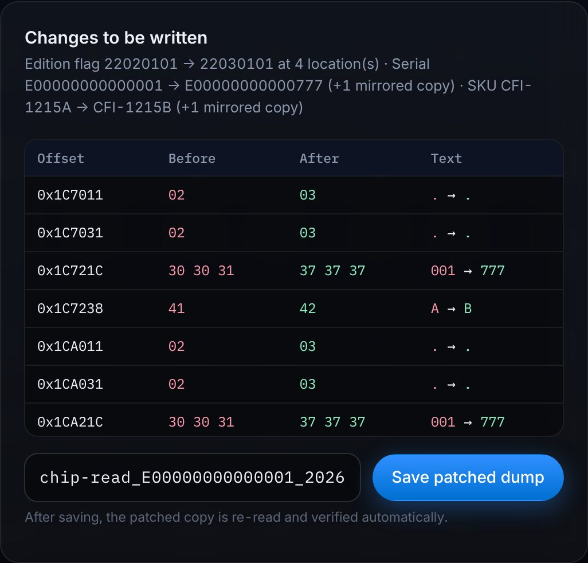
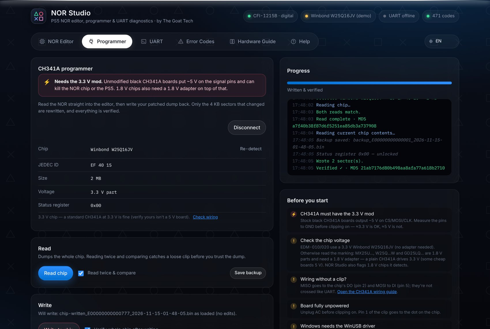
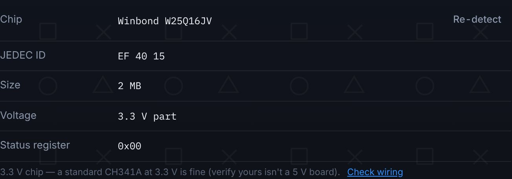
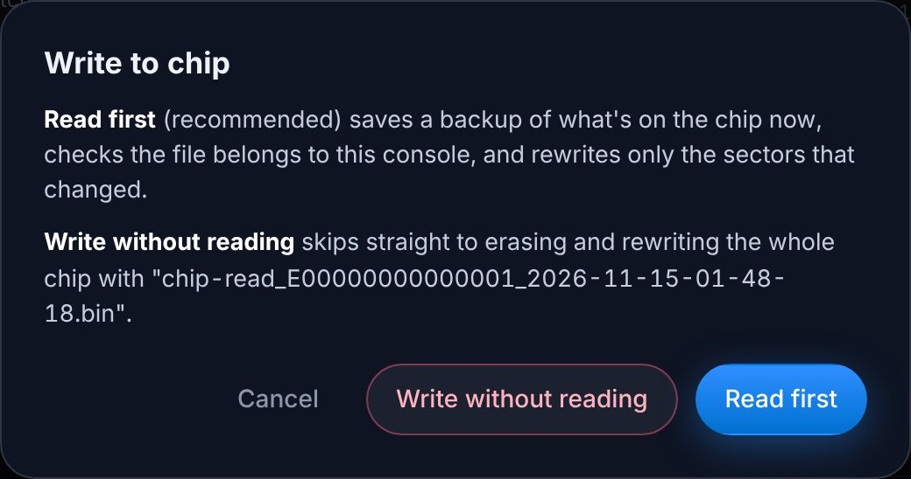
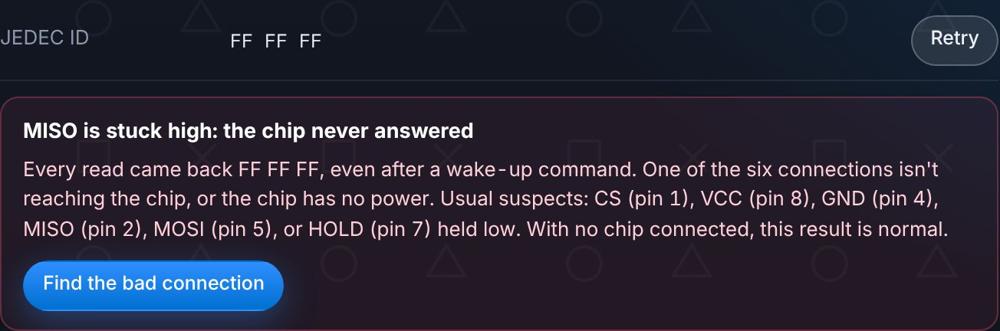
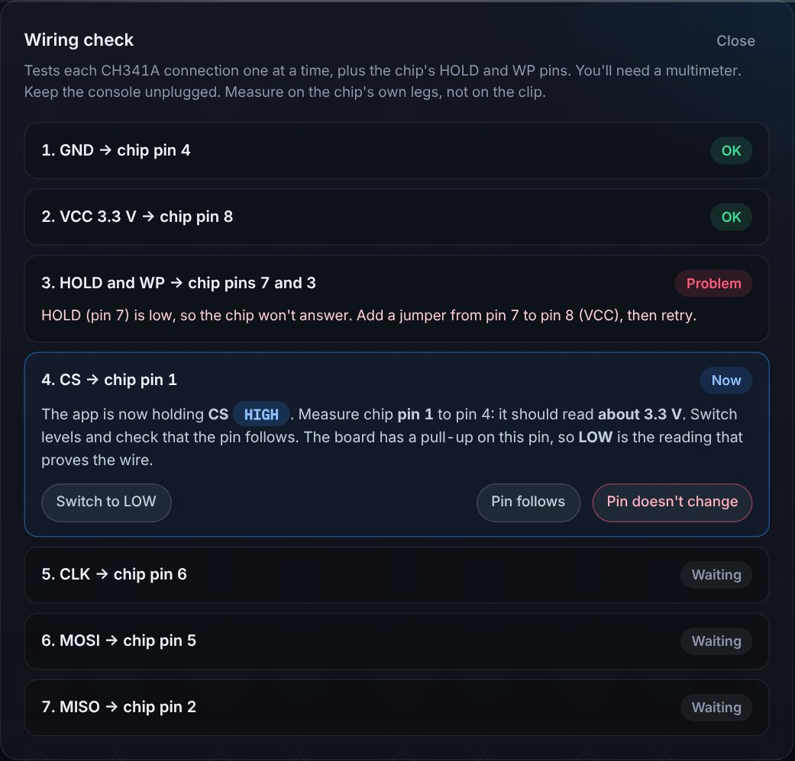
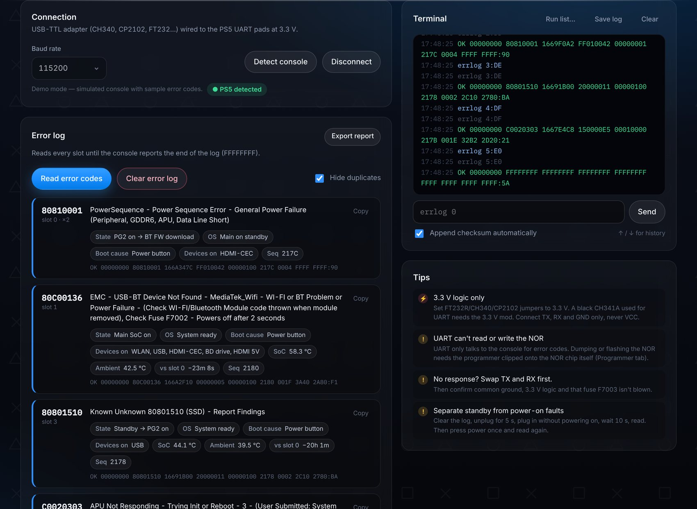
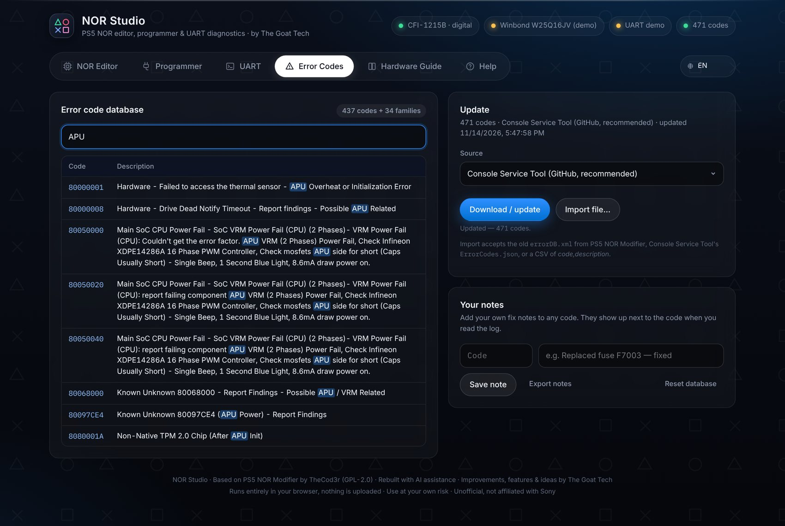

The PS5 keeps its low-level firmware and its identity (serial number, model, MAC addresses, edition) on a small 2 MB flash chip called the NOR. When that chip or its data goes bad, the console may not power on at all, or it beeps three times as soon as it's plugged in.
NOR Studio is one web page that covers the whole repair:
Everything runs in your browser. Nothing is uploaded, and your original files are never changed: edits are always saved as a new file.
A few minutes here can save a console. These are the mistakes that damage boards.
NOR Studio asks you to confirm the voltage the first time you connect each adapter, warns about 1.8 V chips when it detects one, and asks before closing the page while a write is running.
No install, no admin rights. You need a desktop Chromium browser for the hardware features.
| What | Details |
|---|---|
| Browser | Desktop Chrome, Edge or Opera. UART and the programmer use Web Serial and WebUSB, which Firefox and Safari don't have. Those browsers can still use the NOR Editor and the error database. |
| Opening the app | Use the project's GitHub Pages address, or open index.html straight from disk. Once the error database has been downloaded, it works offline. |
| CH341A on Windows | Browsers can only talk to the CH341A through the WinUSB driver. Once: run Zadig, choose Options → List All Devices, select the CH341A (USB ID 1A86 5512), pick WinUSB and click Replace Driver, then replug it. NeoProgrammer needs the original driver back afterwards. |
| CH341A on Linux | Add SUBSYSTEM=="usb", ATTR{idVendor}=="1a86", ATTR{idProduct}=="5512", MODE="0666" to /etc/udev/rules.d/99-ch341a.rules, reload udev and replug. |
| CH341A on macOS | Works as-is. |
| UART adapter | FT232R, CH340, CP2102 and similar work. If the adapter doesn't show up in the port picker, install its USB-serial driver and replug it. |
| Other programmers | XGecu T76 and similar: read and write with their own software, then open the .bin in the NOR Editor. |
Six tabs across the top (a bottom bar on phones), with status pills that show what's loaded and connected.

| Tab | Use it to |
|---|---|
| 1 · NOR Editor | Open, inspect, check and edit a dump. Save a patched copy. |
| 2 · Programmer | Read and write the NOR chip with a CH341A. Find a bad connection with the wiring check. |
| 3 · UART | Read, decode and clear the console's error log. Send commands. |
| 4 · Error Codes | Search the code database, update it, add your own notes. |
| 5 · Hardware Guide | NOR and UART locations per board, CH341A wiring, and the 3 beeps troubleshooter. |
| 6 · Help | Setup notes, the UART protocol, shortcuts and credits. |
1–6 switch tabs · Ctrl+O open a dump · Ctrl+S save the patched dump · / search error codes
NOR Studio comes in English, Português (Brasil), Español (Latinoamérica), Español (España), Simplified Chinese and Traditional Chinese. It follows your browser's language; the language picker next to the tabs next to the tabs switches it at any time. Error code descriptions from the database stay in English.
A thin glow along the top edge shows what the app is doing, like the PS5's own light: blue while reading or writing, a white flash when something finishes, amber when something goes wrong.
The Programmer and UART tabs each have a Demo button. It simulates a CH341A with a chip, or a console with error codes, so you can learn the app without touching hardware.
Open a dump, check it, change what you need, and save a new file. The original is never touched.
Drag a .bin onto the page, press Ctrl+O, or click the drop area. A dump read with the Programmer tab opens here automatically. PS5 dumps are always 2 MB.
Console information shows what the dump says about its console: serial number, motherboard serial, model/SKU, region, board revision, the HDMI chip it expects, WiFi and LAN MAC, Kiban ID, firmware versions, active slot and OS flags. Each row has a Copy button.
Every dump is checked as soon as it opens. Green ticks are fine. Amber marks something worth a look. A red cross means the dump is damaged or the read failed, and writing it is blocked.
| Check | What a problem means |
|---|---|
| Size, header, MBR | Not a PS5 NOR, or the read failed. |
| Blank dump | Every byte is the same: the programmer read nothing. |
| EAP key magics | The NVS area may be corrupted. |
| Identity block checksum | The words from 0x1C4000 to 0x1C41FF must add up to zero. If not, the console beeps 3 times. A single corrupted byte gets a one-click fix. |
| Error log | Shows the log stored in the dump. A donor with APU, power or thermal faults came from a sick console. |
| Firmware containers | Damaged firmware blocks. |
| MAC block, OS flags | Copies that should match don't. |

CFI-2015 A01X. The app warns you if the new SKU is a different length from the old one.Use this when you're putting a donor NOR into your console. Open the donor dump, press Choose original dump… and pick your console's own backup. Tick what to copy (serial, motherboard serial, SKU, the board ID and LAN MAC block with its check bytes, Kiban ID, WiFi MAC block) and press Apply.
0x30. It also warns you when the donor is set for a different HDMI chip than your console.Every edit shows up in Changes to be written: each field, every location it's stored, and a byte-level diff. Press Reset to undo everything.
Save patched dump (Ctrl+S) downloads a new file named after the console's serial and model. The app checks the edits first and asks you to confirm anything unusual, such as a changed SKU length.
Compare… loads a second dump and lists every byte that differs, grouped by area. Use it to check a write, or to see what a tool changed.

Read the NOR chip into the editor, and write a dump back, with a 3.3 V-modded CH341A.

EF 40 15 (Winbond W25Q16JV, 3.3 V).
Press Read chip. The app reads the whole chip twice and compares the two reads, so a loose clip can't slip a bad backup past you. The result opens in the NOR Editor. Press Save backup straight away.
Open or edit the dump you want in the NOR Editor, then press Write to chip. You choose how:
Either way, the app removes the chip's write protection if it's set, then verifies the whole chip afterwards. The terminal scrolls into view when a job starts. Cancel stops between sectors.

When the chip doesn't answer, this finds out which connection is the problem.
If the chip ID fails, the app reads it several more times and sends a wake-up command, in case the chip is in power-down mode. Then it explains what the reading means:
| Reading | Meaning |
|---|---|
| FF FF FF | MISO stuck high: the chip never answered. CS, VCC, GND, MISO, MOSI, or HOLD held low. With nothing connected, this reading is normal. |
| 00 00 00 | MISO stuck low: usually no power or no GND, or MISO shorted to ground. |
| Off by one bit | For example DE 80 2A. The chip answers, but clock and data are out of step: long or loose wires, especially CLK. |
| Changes between reads | A loose or intermittent contact. |

Press Find the bad connection. You'll need a multimeter, and you should measure on the chip's own legs, not on the clip. It goes through each connection in turn:
At the end it names the connection that failed and how to fix it, with a Retry chip ID button.

The console's service port gives you its error log. UART can't read or write the NOR; it only talks to the console.

$$ [MANU] UART CMD READY appears, the app shows PS5 detected. Detect console wakes a quiet console.Type a command and press Send. The checksum the console needs is added automatically (for example errlog 0 becomes errlog 0:BA). Use the arrow keys for history. Run list… sends a list of commands one after another. Save log keeps a copy of the session. Unplugging the console doesn't disconnect UART.
Over 430 exact codes and 30 code families, searchable, with your own notes.

errorDB.xml from PS5 NOR Modifier, Console Service Tool's JSON, or a CSV.Where the NOR and UART points are on each board, and how to wire them.
| Section | What's in it |
|---|---|
| EDM-010 / 020 | NOR IC5001 pinout and UART pads JL5101–JL5110 from Sony's service manuals, and the NOR drawn as it sits on an EDM-010, next to its CXD90061GG southbridge. |
| EDM-03x | UART pads near F5402 and NOR notes. |
| EDM-04x+ (Slim) | UART pad map, and photos of the NOR (W25Q16JV, next to the southbridge, pin 1 dot lower left) from an EDM-041. |
| CH341A wiring | Wiring the programmer straight to the chip, with labels on the chip diagram. You can turn the labels off. |
| 3 beeps | The troubleshooter in section 12, plus donor dump advice. |
| HDMI chip swap | Converting a Slim's NOR from Realtek to Panasonic for HDMI converter boards such as BGA Tech's: the maker's base file plus Restore identity. |
| CH341A | Chip pin |
|---|---|
| CS | 1 (CS#) |
| MISO | 2 (DO) |
| GND | 4 |
| MOSI | 5 (DI) |
| CLK | 6 |
| VCC 3.3 V | 8 |
Why the names don't match: SPI is named from the programmer's side. MISO goes to the chip's output (DO), MOSI to its input (DI). Don't cross them like UART's TX and RX.
Pins 3 (WP) and 7 (HOLD) must be high. A clip on the CH341A's socket ties them high for you. With direct wires, the board's pull-ups do it. If pin 7 reads 0 V, add a jumper from pin 7 to pin 8.
Powered-board method: with the console in standby, the NOR already has 3.3 V, so leave the VCC wire off. On EDM-010/020, hold the southbridge in reset (JL5110 to GND) so it doesn't use the chip at the same time.
The usual workflows from start to finish.
EF 40 15.The southbridge checks the NOR before anything else powers up. If it doesn't like what it finds, it beeps three times and stops.
00 at 0x1C4000 instead of 30, which broke the identity checksum. Donor + own identity + 30 booted on the console's own serial and MACs.NOR Studio doesn't host dumps: each one contains Sony's firmware and another console's serial, MACs and keys. Repair forums share them in their firmware threads, for example BadCaps and TronicsFix. Before using one:
Quick answers to the problems people hit most.
| Problem | What to do |
|---|---|
| CH341A doesn't appear in the picker | Windows: install WinUSB with Zadig (section 3). Linux: add the udev rule. Close other programmer software. |
| Chip ID reads FF FF FF | Run the wiring check (section 7). Check MISO/MOSI aren't swapped, CS reaches pin 1, and pin 7 isn't low. In-circuit, try chip-off. |
| Chip ID changes between reads | Loose contact. Reseat the clip, or use shorter soldered wires. |
| Programmer 3.3 V drops to about 3.0 V when connected | Fine for the chip (it runs from 2.7 V). In-circuit, the board is drawing current through the NOR's supply. |
| Read and verify don't match | Bad contact during the read. Fix the wiring and read again. Never write a dump that failed its health check. |
| UART: no reply | Swap TX and RX first. Check common ground, 3.3 V logic, that the console is plugged in, and fuse F7003. |
| UART: "port is busy" | Close other serial apps (PS5 NOR Modifier, PuTTY, Arduino IDE). NOR Studio releases the port properly when the connection drops. |
| "Database download error" in the old app | Use NOR Studio's database (section 9). |
| 3 beeps on plug-in | Section 12. |
| Console boots but shows another serial | A donor dump was written as-is. Restore your own identity (section 12). |
Part of NOR Studio's code and logic comes from PS5 NOR Modifier by TheCod3r (GPL-2.0): the NOR offsets, edition flags, UART command format and checksum. It was rebuilt and extended with the help of AI assistance. Improvements, extra features and ideas by The Goat Tech.
NOR offsets cross-checked against ps5-wee-tools by andy-man. Error code data (loaded at runtime), error-log field meanings, OS flag layout and UART reference photos: Console Service Tool by amoamare. Identity block checksum and HDMI chip selector: documented in ps5-hdmi-tool by MeoWDev-MOD. Hardware details for EDM-010/020 come from Sony's board service manuals. IBM Plex Mono is used under the SIL Open Font License.
NOR Studio is licensed under the GNU General Public License v2.0. It's provided as-is, without warranty of any kind. Modifying or flashing a NOR can permanently damage a console, and you use it at your own risk. Unofficial tool, not affiliated with or endorsed by Sony Interactive Entertainment. PlayStation and PS5 are trademarks of Sony Interactive Entertainment.